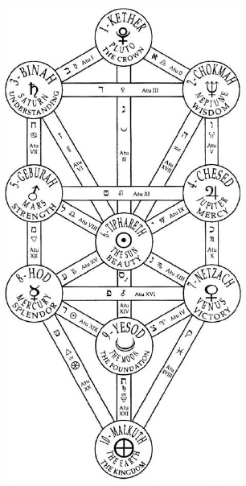
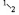
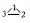
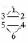
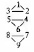
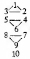
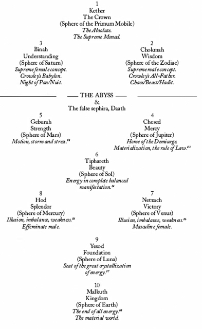

CHAPTER NINE

SECRETS OF THE TREE OF LIFE
The Tree of Life—This figure must be studied very carefully, for it is the basis of the whole system on which the Tarot is based. It is quite impossible to give a complete explanation of this figure, because (for one thing) it is quite universal. Therefore it cannot mean the same to any one person as to any other.78
The Hermetic Rose Cross has certainly yielded many of her secrets concerning the cosmic roots of the twenty-two trumps, the four aces (suits) and the sixteen court cards. However, she does not do a very good job of telling us why there are nine (ten, if you count the Ace) small cards in each suit. To understand the mysteries of the small cards, we are first going to have to learn a little bit about another Qabalistic figure, the Tree of Life (Etz-Ha-Chayim).
The schematic diagram commonly known as the Tree of Life is arguably the most recognizable image of the Qabalah. It was first published in 1652 in Athanasius Kircher's Oedipus. Ægyptiacus, and quite neatly serves to condense a great deal of Qabalistic wisdom into a very small space. It is particularly illustrative of the opening paragraph of perhaps the most influential Qabalistic texts of all time, the Sepher Yetzirah (The Book of Creation).
Yah, the Lord of hosts, the living God, King of the Universe, Omnipotent, All-Kind and Merciful, Supreme and Extolled, who is Eternal, Sublime and Most-Holy, ordained (formed) and created the Universe in thirty-two mysterious paths of wisdom by three Sepharim, namely: 1) S'for; 2) Sippur; and 3) Sapher which are in Him one and the same. They consist of a decade out of nothing and of twenty-two fundamental letters. He divided the twenty-two consonants into three divisions: 1) three mothers, fundamental letters or first elements; 2) seven double; and 3) twelve simple consonants.79

FIGURE 21. THE TREE OF LIFE.
In the previous chapter, we learned that the thirty-two mysterious paths of wisdom are comprised of the twenty-two letters (trumps) and their division by three, seven, and twelve. Now we will learn just a little bit about the “decade out of nothing.”
We ten-fingered bipeds have always had a healthy respect for the numbers ten and four. As a matter of fact, it appears that our hands and fingers are the source of much ancient Qabalistic meditation—wisdom that would later help construct the tarot. I won't bore you too much on this subject, but I will pause to point out that:
- The tenth letter of the Hebrew alphabet is Yod, the Hebrew word for “hand”;
- Our opposable thumb (working in cooperation with our other four fingers) is one of the most important attributes that separates humans from other animals and is the fundamental key to making us creative beings and the masters of our environment;
- As tradition informs us that we are made in the image of deity, it follows that the creative “hand of God” must be the work of a single deity (spirit/ace) that expresses itself in a fourfold manner (YHVH…four Qabalistic worlds, four parts of the soul, four elements, four tarot suits, four court cards);
- Four and ten are inextricably related and mutually definable by simple mathematics (10 = 1+ 2+ 3+ 4).
The following is from Angels, Demons and Gods of the New Millennium and gives a brief summary of the creation of the “decade out of nothing.” Please do not worry if at first you find it difficult to follow the logic of how the Tree of Life is constructed. Believe it or not, once you grasp the basic concept, it is much easier to think about than it is to explain.
The Tree of Life is a linear schematic of ten emanations and twenty-two paths upon which the universal mechanics of energy and consciousness are projected. In one respect it is a very unsatisfactory diagram for it attempts to dimensionalize the transdimensional. It has been called the diagram of the anatomy of God, and if we are indeed created in the image of God then that means that it also reveals the spiritual anatomy of each of us. Students of Kundalini Yoga agree, and point out that the seven chakras or spiritual centers in the human body can be projected quite comfortably upon the Tree of Life.
All ten sephiroth, or emanations, of the Tree are really only aspects or facets of the top (first) sephira, Kether, which represents the totality of existence—the supreme monad. But even the concept of ONE is a blemish upon the sublime perfection of the pre-existent ZERO.80 If ONE is to exist and become conscious of its oneness it must reflect itself (like a yogi in meditation who reaches to the core of being and exclaims “that's what I am!”). The mere act of reflection creates TWO

.(ONE is now conscious of itself and its reflection.) The knowledge that there is a difference between ONE and TWO instantly creates a third condition
. This “trinity” by itself is still an abstraction and exists only in potentiality. Nevertheless, a primal pattern has been established by the process of 0NE becoming THREE. This archetypal germ sets into motion a chain-reaction that animates the entire creation scenario—the process of consciousness/light/spirit descending into matter.The phenomenal universe manifests through a process of degeneration in the next seven sephiroth. The trinity unit FOUR-FIVE-SIX is created by the reflection of the ONE-TWO-THREE unit

and the same process that created THREE from ONE-TWO creates the third trinity unit of SEVEN-EIGHT-NINE.
TEN, the world of matter, is rock bottom and dangles from the Tree of Life like an afterthought of creation:
81This is the “decade out of nothing.” It is the fundamental pattern of creation. Theoretically, every conceivable idea, quality, principal, aspect, and tendency finds a home in one of the ten pigeon-hole sephiroth of the Tree of Life. But the Hebrew mystics were not satisfied with just one Tree of Life. God is One. True. But the one God has a four-letter name,  YHVH, by which it manifests.
YHVH, by which it manifests.
And so, the ancient Qabalists found it easier to meditate upon the qualities of one by considering it in terms of four. Consequently, for practical purposes (and especially for tarot), we find ourselves dealing with four Trees of Life representing the four letters YHVH, the four Qabalistic worlds, the four parts of the soul, the four elements, and the four tarot suits. The titles of the ten sephiroth are consistent in all four Trees of Life (see page 62).
THE FOUR TREES OF LIFE, THE ACES, AND SMALL CARDS
The ten sephiroth, or emanations, of each of the four Trees of Life are joined together by twenty-two paths that are portrayed in tarot as the twenty-two trump cards and the letters of the Hebrew alphabet. The forty sephiroth of the four trees are perfectly represented in tarot as the four aces and the thirty-six small cards.

The area (or non-area) between the supernal triad (sephiroth 1-2-3) and the rest of the Tree is called the Abyss. It is an inscrutable looking glass that separates the ideal (the abstract concepts of 1-2-3) from the actual (the manifest qualities of the phenomenal universe). Consequently, we view the aces, twos, and threes of the four suits a bit differently than we do the other small cards, because they are the supernal triad of their respective Trees of Life. The cards of the supernal triad are one big happy family, a single unit that embodies the essence of the suit. Why are they so happy?
All four aces are happy because they represent the Kethers of their Trees of Life and the root of their elements. Al the twos and threes are happy because, along with their aces, they reside comfortably above the Abyss. The twos (Dominion, Love, Peace, and Change) are the first manifestation of their suits as ideas. They are outrageously happy just to exist as the expression of their respective aces. The threes (Virtue, Abundance, Sorrow,89 and Work) were created automatically at the moment one reflected to become two. The threes exist from necessity to stabilize the twos and form the womb in which all the other small cards can incubate. Pretty abstract, eh?
Please note that, in the above paragraph, I stressed the word “represent.” That is because the small cards are not the sephiroth themselves. Even though, for practical purposes, we work with small cards as worthy representatives of the sephiroth, the sephiroth themselves are of a vastly superior order of spiritual reality than could ever be defined by the character and behavior of four sets of ten cards. In fact, the small cards are sub elemental in nature—blind forces that are merely sympathetic echoes of the sephiroth that have filtered down into the elemental universe. Nevertheless, even though we are possessed with limited powers of perception, we can learn a great deal about the nature of the sephiroth by listening to these echoes—by observing (in an indirect way) how they color and affect the blind forces of the elements represented by the small cards.
Because Atziluth is the native world of Wands, and Briah is the native world of Cups, and Yetzirah is the native world of Swords, and Assiah is the native world of Disks, one might think that all small-card Wands, Cups, Swords, and Disks would be happy in their respective Tree of Life. It doesn't work that way. Each of the four Trees of Life, because of the uniqueness of the world they represent, has areas of strengths and weaknesses that differ from those of the trees of other worlds. For example, Yesod may be strong in Atziluth (Wands), but weak in Briah (Cups) and Yetzirah (Swords), and so on.
RULES OF THUMB
(I suggest you bookmark this page and refer to it often as you study the characteristics of the of the small cards.)
Unless there are strong astrological mitigating factors (which we will soon discuss), the following is generally true:
- Aces, twos, and threes (cards of the supernal triad) are very strong and together define their suits in principal;
- Fours (being the first manifestation of their suit below the Abyss) define their suits in actuality. As a matter of fact, because they have no idea what life is like above the Abyss, the fours (like the Demiurge) mistakenly believe themselves to be the aces of their suits. They are very strong and, like the Demiurge Zeus, establish their element's “rule of law”;
- Fives are active and strong, but unbalanced and troublesome. (Shall we say downright horrible?);
- Sixes are invariably strong and noble representatives of their suits (being the direct reflection and first balanced manifestation of their ace);
- Al the sevens (being unbalanced and low on the Tree of Life) are very difficult and for the most part, perfectly awful;
- Eights have much in common with the sevens (unbalanced and low on the tree). However, eights have fallen so low that they are starting to run out of the original energy of the suit, and so their planetary and zodiacal attributes become very important factors. Some are good—some not so good;
- Nines generally are stable and supportive of the suit. The exception is the Nine of Swords;
- Tens generally are a disaster because, with the exception of the Ten of Disks, they are about to completely lose their suit identity and plunge into a lower world. The Ten of Disks is the exception. Being the last small card, it has nowhere to go but back up to the top. That trick, we will ultimately learn, is the secret that sustains the universe.
We can think of the ten sephiroth of the Tree of Life as representing a descent of energy. In that case, we are actually contemplating the creation of the phenomenal universe. We can think of the sephiroth as representing a descent of consciousness. In that case, we are actually contemplating the true meaning of the concept of the fabled “fall of man.” We can also think of the sephiroth as the descent of light—and when light descends we have color.